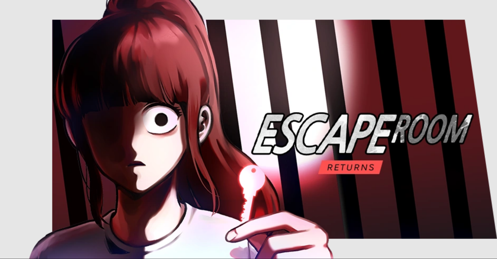

Her ability to detect lies has made her an outstanding officer of the law – despite being haunted by her inability to save the ones she loved
from a gruesome fate many years ago. Now, she uses her powerful gift to defend the defenseless at any cost – even if it means teaming up with
a deadly assassin to fight evil in a world gone mad.
It’s 1935 in Gyeongseong, and struggling artist Iho Yun has been commissioned by the reclusive, elderly Madam Jeonghwa Song to paint a portrait.
Madam Jeonghwa Song allows Iho to set eyes upon her -- an unprecedented event -- and standing before him is a young woman. But why does she ask
him to paint an elderly version of her? “Don’t finish the portrait.” Tucked between the previous artist’s paint tubes is an ominous letter. Iho
learns that no artist has left Madam Song’s abode alive or of sound mind. Just what is she hiding and what will happen if Iho finishes the portrait?

Overly rational. Sociopathic, even. Sean's unfeeling personality consistently drives people away from him. That is, until he wakes up after a night
of heavy drinking in... an escape room? Now he must use his unique mind and join hands with other players to survive sadistic games of life and death.
The only way out is to escape!